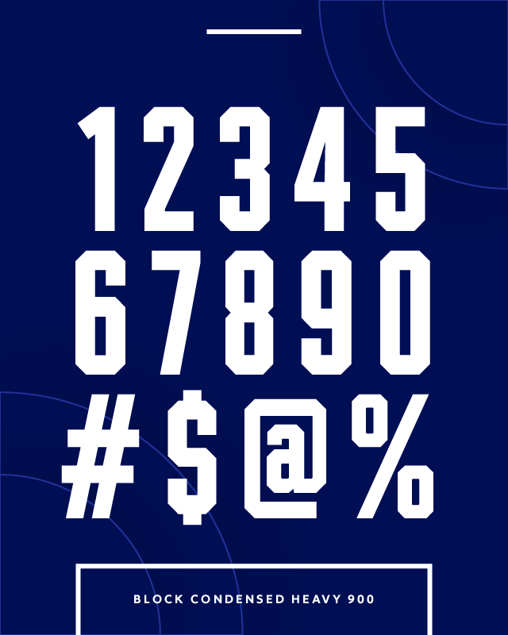
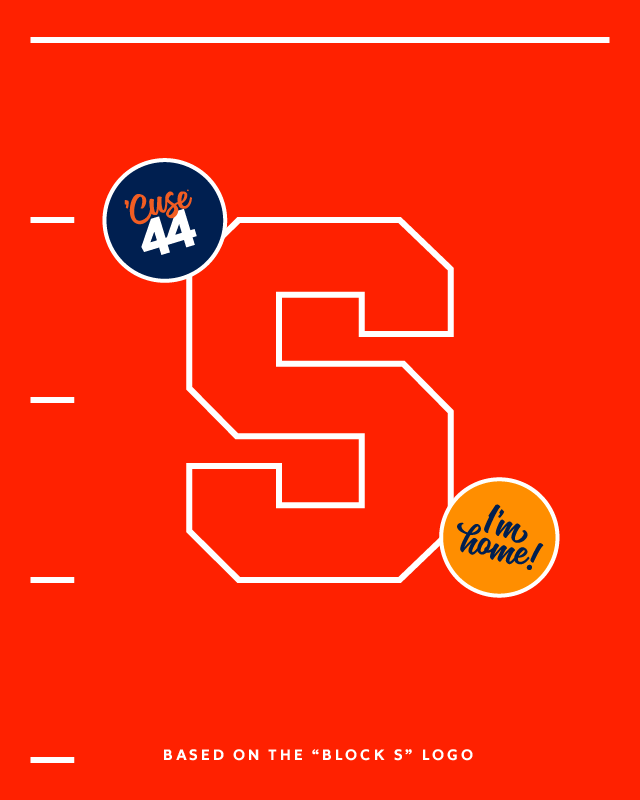
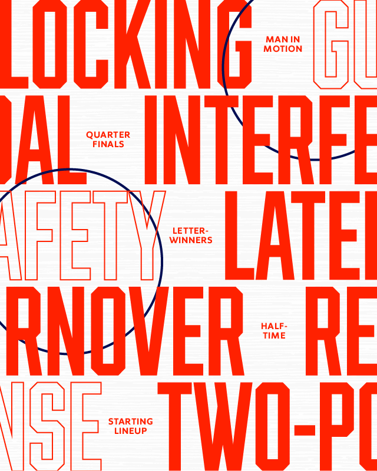
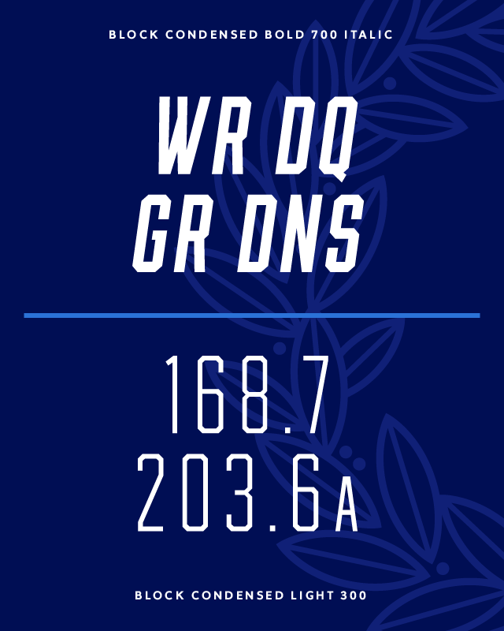
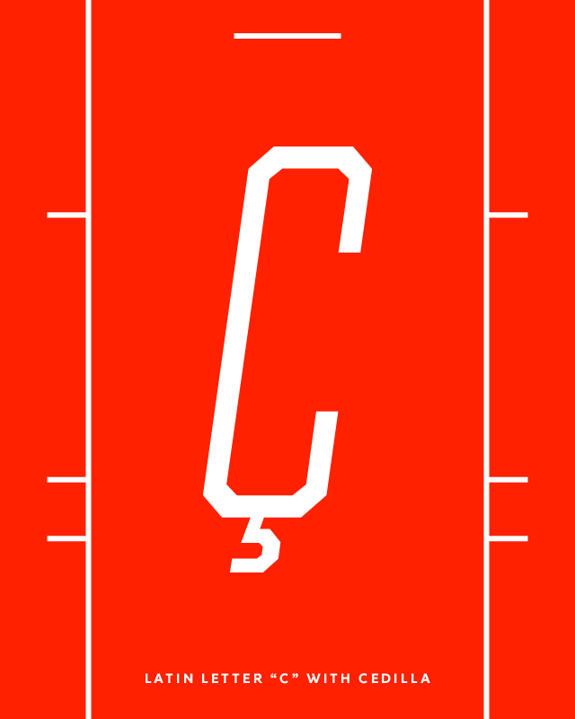
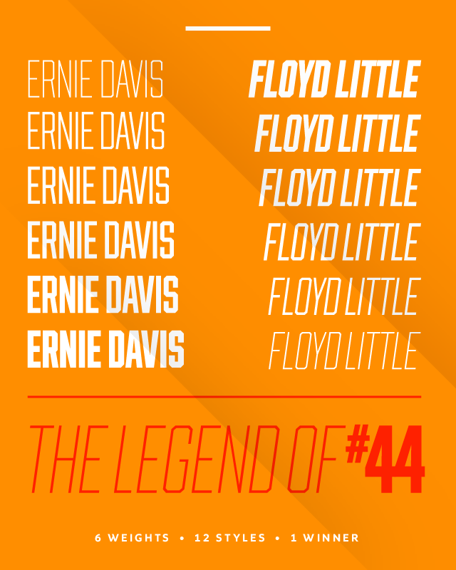
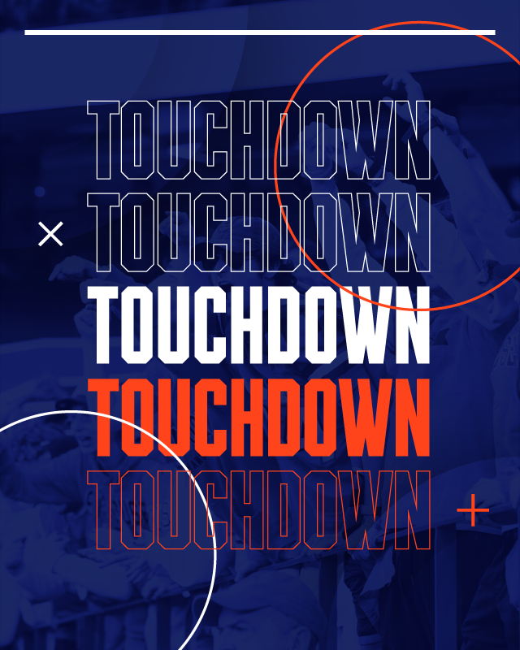
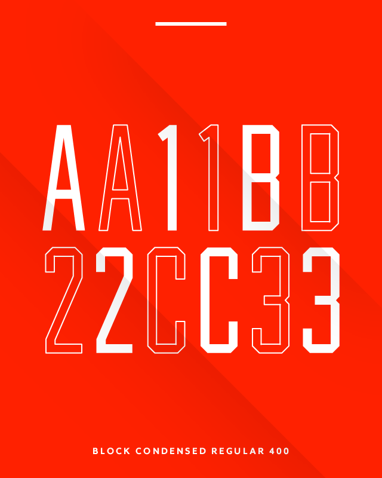

A variable display font for Syracuse University. Designed by Christos DeVaris and Joey Sweener.
HINT: Try editing the title!








A Á Ă Ǎ Â Ä À Ā Ą Å Ã Æ B C Ć Č Ç Ċ D Ð Ď Đ E É Ě Ê Ë Ė È Ē Ę F G Ğ Ģ Ġ H Ħ Ĥ I IJ Í Ǐ Î Ï İ Ì Ī Į J K Ķ L Ĺ Ľ Ļ Ł M N Ń Ň Ņ Ñ Ŋ O Ó Ǒ Ô Ö Ò Ő Ō Ø Õ Œ P Þ Q R Ŕ Ř Ŗ S Ś Š Ş Ș ß T Ť Ţ Ț U Ú Ǔ Û Ü Ù Ű Ū Ų Ů V W Ẃ Ŵ Ẅ Ẁ X Y Ý Ŷ Ÿ Ỳ Z Ź Ž Ż “ ” ‘ ’ " ' ; _ - – — ¢ $ € £ ¥ @ & 0 1 2 3 4 5 6 7 8 9 ~ - + = × ÷ = ® > < % ° ^ | * \ / · • : , … ! ¡ # . ? ¿ { } [ ] ( ) ©
HINT: Try editing the sample words!
First developed internally by former creative director Christos Devaris in 2020, Syracuse Block Condensed is Syracuse University's exclusive display typeface. Built to complement the Sherman family of fonts, and based around the weight and chamfered edges of the University's Block S logo, the typeface provides an amplified solution to branded typography while feeling at-home alongside our other materials.
In 2022, the internal creative team revisited the typeface, an effort led by senior designer Joey Sweener. Taking DeVaris' original work—which included 9 font weights and slanted forms to match—the typeface was slimmed to six weights and optimized for use on the web. This included remastering nearly every glyph, expanding the font's Latin language support and converting it into a variable font. By making it variable, it allows for lightweight distribution of the font family onto the web, and opens up further design extensions into motion.
Syracuse Block Condensed is a display font, and should be utilized like one. Headlines, groundbreaking announcements, important game-day updates and more are where this font best finds its home. For the web-oriented, this means the font shouldn't be sized below 3rem in size. We recommend you keep it away from important places within the user experience, like navigation and breadcrumbs. Sherman is better for those uses.
When you use Syracuse Block Condensed at a smaller point size, try to stick to the heavier weights and ensure it's well tracked. As your point size gets larger, you're free to use the thinner weights. Design with dynamism in mind! The goal is to maximize legibility while still being expressive.
Syracuse Block Condensed has been designed to support extended Latin characters. This natively provides language support for nearly 100 Latin-based languages, excluding Vietnamese. To provide further language support for non-Latin languages, such as Arabic, Cyrillic, Korean, etc. Syracuse University advises using Oswald, an open-source font delivered through Google Fonts, as the fallback for those languages. Embed Oswald as a variable font and get all the same functionality as Syracuse Block Condensed!
When styling display text in CSS, the font stack should look like this:
font-family: 'Syracuse Block Condensed', 'Oswald', sans-serif;